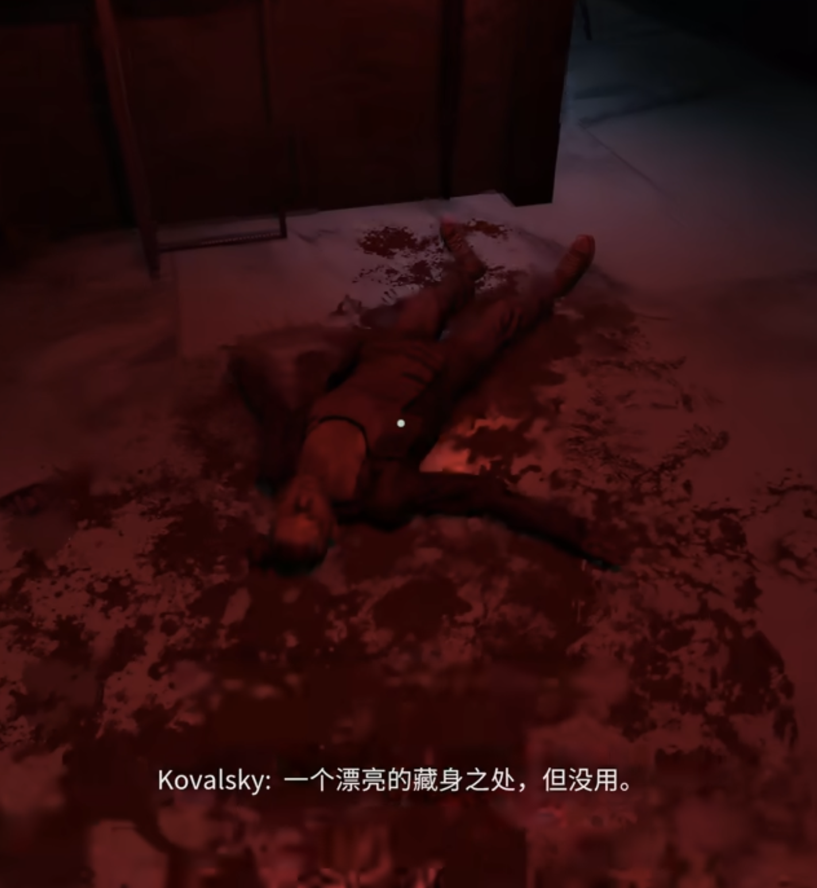

【评测】经常杀人的朋友都知道，杀人容易洗地难：《犯罪现场清洁工》
入坑
上周被老婆安利了犯罪现场清洁工🤔。我记得几年前有冲就完事模拟器，现在这个游戏把清洁模拟搬到犯罪现场了。每个凶杀现场都给我感觉这群杀手真笨啊，杀个人弄的到处都是。大量的血迹让人开始烦躁，然后一不小心碰碎了易碎品还得收垃圾。 犯罪现场的保洁和普通保洁都差不多，先处理动物尸体，再处理大片的脏污，最后清理细节。不过经常杀人的朋友都知道，血液会渗入木材、地面中，很难彻底抹除这些证据，只要细心让人不能立刻发现这里有案件就已经很不错了。 (题外话：前天晚上和我说，其实后面还有秘密，主角住的房子也不是自己的，他其实是个杀手，最后的清洁就是前几关住的房子。我还真信了，然后我老婆哈哈大笑说她纯编的，但是我越想越合理)
游戏特征：
相对于其他游戏过场动画的平铺直叙，或者黑魂这种碎片化叙事🤔，这个游戏更像是把故事融在脏污的环境中。
比如客厅破碎的玻璃和地毯上的拖拽痕迹、满地的弹壳和被掀翻的桌子都能让清洁工拼凑出凶案发生的时的激烈场景。电话、字条什么的则可以复现出来整个案件的来龙去脉。像是福尔摩斯一般的为你展示死人和环境也会说话。

这种叙事方式在第一关就充分体现，帮taylor打扫犯罪现场的时候突然被头上滴落的血液吓一跳，抬头打开天花板才发现被害人竟是另一系列女大学生连环遇害案的凶手，用人血作画的变态杀人狂。
 后面闹鬼的短路，遍地尸体的激战披萨店更是一个比一个有代入感。
后面闹鬼的短路，遍地尸体的激战披萨店更是一个比一个有代入感。

关卡外则有串联起整个游戏流程的主线，主角为了救女儿而打工，以及帮派大佬jim利用主角完成各种善后工作。每次打扫一遍感叹太可怜了一边疯狂搜刮战利品，何尝不是一种搜打撤呢。一个哥们看这个游戏直呼穷比闹鬼可怕多了，穷鬼遇到诡异现象不理会反而翻箱倒柜更起劲。结合最近老A讲的各种斩杀线的事情，🤔感觉这游戏甚至会是一个写实游戏。

总体评价
游戏每个关卡感觉都得一个小时左右，不太适合碎片时间游玩。
优点：将清洁模拟与犯罪惊悚结合，创造了独一无二的猎奇满足感。玩家既是清洁工，又是侦探，还是半个共犯。让环境细节讲故事，尊重玩家的智商与观察力。
缺点：一直按着清扫还是挺累的，可能是岁数大了，感觉手腕一直痛。尽管关卡主题在变，但核心的“拖地-扔垃圾-摆放家具”循环连着玩时间太久的话有点乏味。有的时候实体会卡在车上。碰碎的易碎品碎片被拖把一推可能不知道飞到哪里去了
待游玩： 听说噩梦模式中还有邪教元素，🤔待体验，不管是邪教还是鬼祟，和这个游戏背景倒是蛮搭的。